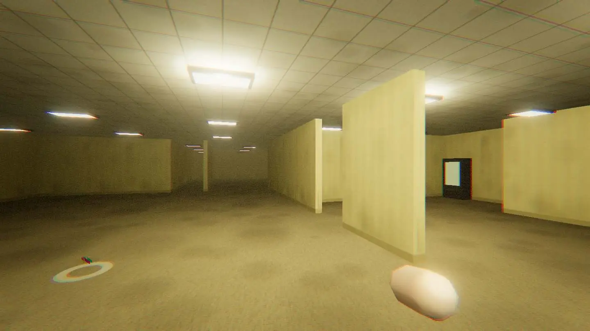
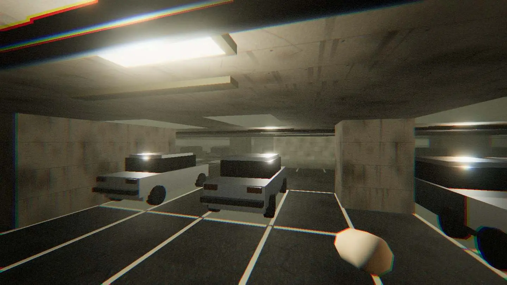
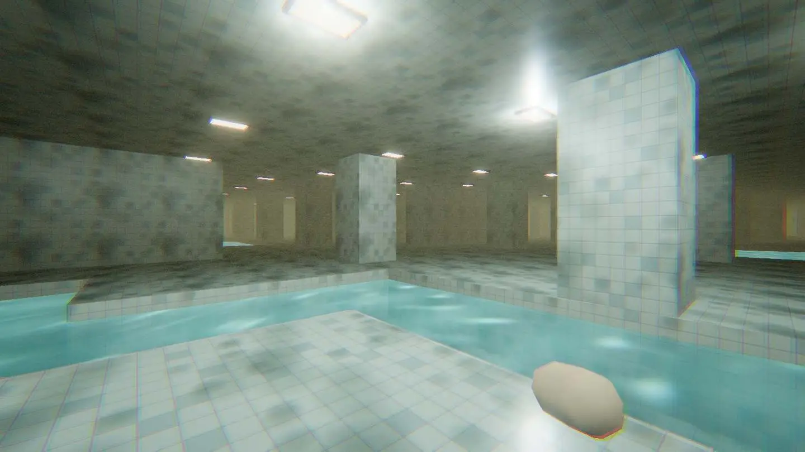
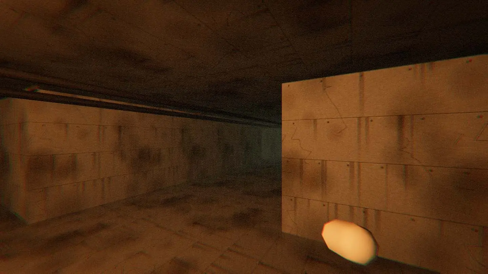
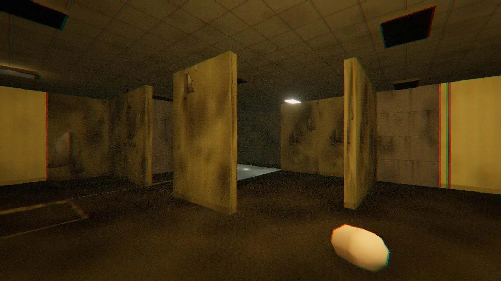

00:02:14
It stops when you look
In nine frames. Moves only while the camera is pointed somewhere else, and is out of focus in every single frame it is in.





Free browser horror · no download
↑↓ move the cursor · Enter select
Nineteen minutes and twenty-seven seconds of tape came back. The person holding the camera did not. Press play and you are the next one holding it: a first-person descent through six floors of a building that has no outside, hunted the whole way down.
Sound carries further than the picture — headphones recommended
It runs in the browser on WebGL. There is nothing to download, nothing to install and no account to make — the tape starts the moment you press play, on a computer or a phone.
You stopped at 00:08:41, one floor into the parking, carrying one of the three fuses. Nothing down there moves while the tape is stopped: shut the tab, come back next week, the building is holding your place in it.
Rewinding wipes this descent — your records survive it
The deck reads six clean segments and will not say what is between them. Each one is a floor with its own light, its own way down and its own price.
Pick a segment to put it on the tube
Frame by frame, four subjects appear more than once. None of them is ever fully in shot. The timecodes are the first appearance of each.
In nine frames. Moves only while the camera is pointed somewhere else, and is out of focus in every single frame it is in.
Upright, and it gets the arms wrong. Twice at a distance, once close. The close one is why this tape was handed in.
Never in shot. Audible on the left channel for a full minute before the running starts: it was tracking sound, not light.
Last segment. Count them in the reflections rather than the corridor — there are always more in the reflection.
Everything is on the hand you are already using. Nothing to rebind before you start.
On a phone: left thumb walks, right thumb looks, push the stick to the rim to run
The number is the building. The same digits lay out the same six floors every time — the same doors, the same keypad code, the same long room you have to cross twice. Hand somebody your number and they get your descent, not a different one.
Records are kept on this device only. Nothing is uploaded and nobody is counting but you
The deck is holding one frame and the building is holding your place in it. Close the tab if you want — nothing down there moves while the tape is stopped.
Rewinding to zero wipes this descent and keeps your records
The tape kept running for eleven more seconds after the camera stopped being held. There is nothing on those frames worth reading. The deck has fallen back to blue.
Every deck does this. It does not mean the tape is finished
End of reel
00:19:27 · the tape does not say who